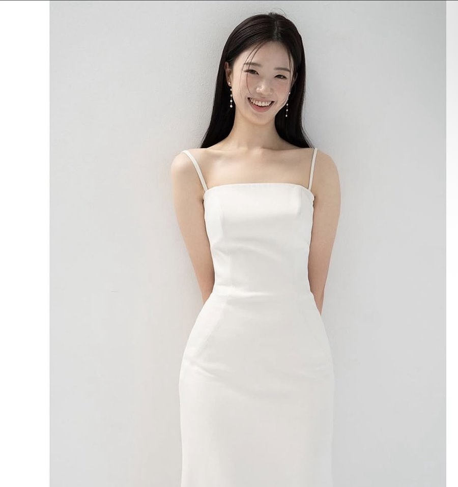
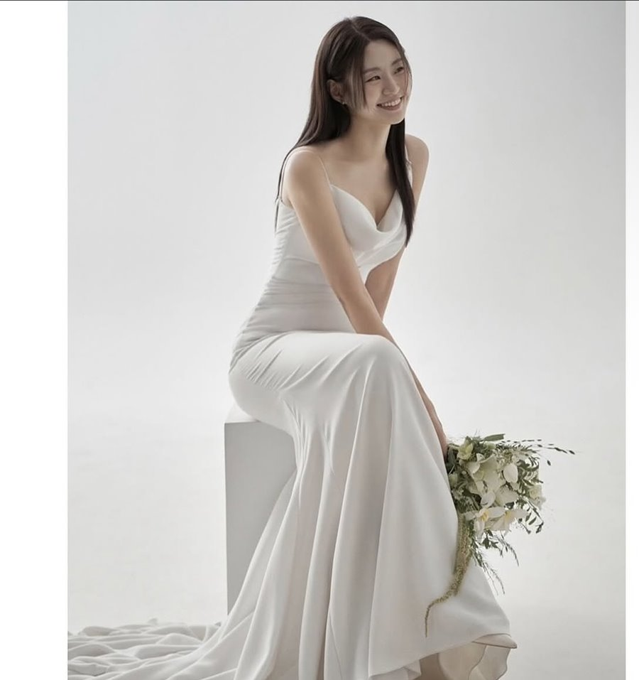

01
Indoor · Silver
실내 · 실버 공간
차가운 메탈 톤 배경 위에 새틴의 윤기를 살리는 공간. 표정과 실루엣이 또렷하게 남아요.
미니멀시크모던




- 드레스
- 스트랩 슬림이나 오프숄더 새틴. 주름보다 실루엣이 깔끔한 드레스가 잘 어울려요.
- 헤어
- 푼 웨이브를 매끈하게 빗어 넘기거나 낮은 번. 정돈된 결이 새틴과 잘 맞아요.
- 예복
- 블랙 턱시도에 화이트 셔츠. 보타이를 더하면 더 클래식해져요.
- 소품
- 작은 부케와 반지. 소품은 최소로 두고 표정에 집중해요.
- 포즈
- 정면 응시, 옆얼굴, 손 클로즈업. 웃음은 조금 참으면 더 시크해 보여요.